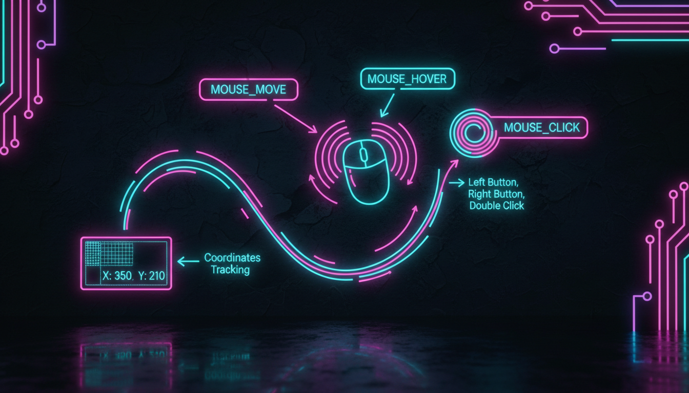

Click, DoubleClick, MouseMove, MouseDown, MouseUp

// Підписка на події
this->MouseMove += gcnew MouseEventHandler(this, &MyForm::OnMouseMove);
this->MouseDown += gcnew MouseEventHandler(this, &MyForm::OnMouseDown);
this->MouseUp += gcnew MouseEventHandler(this, &MyForm::OnMouseUp);
this->MouseClick += gcnew MouseEventHandler(this, &MyForm::OnMouseClick);
// Обробники
void OnMouseMove(Object^ sender, MouseEventArgs^ e) {
lblCoords->Text = String::Format("X: {0}, Y: {1}", e->X, e->Y);
// Малювання при русі миші
if (isDrawing && e->Button == MouseButtons::Left) {
Graphics^ g = this->CreateGraphics();
g->DrawLine(drawPen, lastPoint, Point(e->X, e->Y));
lastPoint = Point(e->X, e->Y);
}
}
void OnMouseDown(Object^ sender, MouseEventArgs^ e) {
isDrawing = true;
lastPoint = Point(e->X, e->Y);
// Визначення кнопки
switch (e->Button) {
case MouseButtons::Left:
// Ліва кнопка
break;
case MouseButtons::Right:
// Права кнопка
break;
case MouseButtons::Middle:
// Середня кнопка
break;
}
}
void OnMouseUp(Object^ sender, MouseEventArgs^ e) {
isDrawing = false;
}